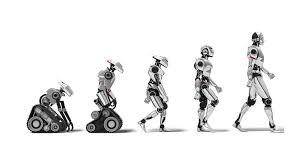

Historia
La historia de la inteligencia artificial comenzó en la década de 1950, cuando pioneros como Alan Turing y John McCarthy empezaron a explorar la posibilidad de que las máquinas pudieran pensar. Desde entonces, la IA ha atravesado varias etapas: desde un entusiasmo inicial con grandes expectativas, hasta periodos de estancamiento conocidos como los "inviernos de la IA", donde la financiación y el interés disminuyeron. Sin embargo, con el avance del poder de cómputo y la disponibilidad de grandes cantidades de datos, la IA ha resurgido con fuerza en las últimas décadas, logrando avances impresionantes en campos como el aprendizaje automático, la visión por computadora y el procesamiento del lenguaje natural.
